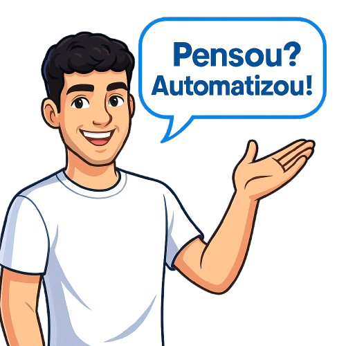

Horas perdidas em tarefas repetitivas
Planilhas, copiando e colando dados, conferindo manualmente... isso rouba seu dia.

Scripts, robôs e websites rápidos para cortar tarefas manuais e aumentar vendas — sem dor de cabeça.
Planilhas, copiando e colando dados, conferindo manualmente... isso rouba seu dia.
Notas erradas, conciliações falhas, respostas atrasadas — tudo por processos manuais.
Leads esfriam. Clientes vão embora. Atendimento precisa ser 24/7 e organizado.
APIs, bots e scripts Python que conectam sistemas e executam rotinas sozinhos.
Dashboards e relatórios automáticos para decisões em minutos, não horas.
Robôs para WhatsApp/Instagram/Site com linguagem natural e fluxos eficazes.
Descubra onde sua empresa perde tempo e como automatizar para ganhar eficiência já.
🚀 Quero meu diagnóstico no WhatsAppCada dia sem automação é dinheiro e tempo indo embora. Vamos destravar seu crescimento.
💬 Falar agora no WhatsAppReduza 80% do tempo em rotinas operacionais com integrações e robôs sob medida.
Planilhas dinâmicas com VBA, análise automatizada e integração com APIs para controle total.
Decisões em minutos: indicadores claros, alertas e atualização automática.
Orquestração ponta a ponta: do formulário ao ERP, zero retrabalho.
WhatsApp, Instagram e site: atendimento 24/7 com linguagem natural.
Envio de relatórios, notificações e fluxos de aprovação totalmente automatizados.
Conecte plataformas, bancos de dados e serviços em um único fluxo.
Sites rápidos (Lighthouse 90+), SEO técnico e design focado em conversão.
Integra arquivos OFX e Excel para conciliar pagamentos automaticamente.
Sistema para criar contratos personalizados de forma rápida e ágil.
Automação para WhatsApp e Instagram usando APIs.
Automatizar processos significa ganhar tempo, reduzir erros e focar no que realmente importa. Desde tarefas simples no computador até fluxos complexos em empresas, a automação gera eficiência e economia imediata.
Cada minuto que você perde com tarefas manuais poderia estar sendo investido no crescimento do seu negócio. Não espere para modernizar sua rotina — quanto antes começar, mais rápido verá os resultados.
Falar com um especialistaA RafferTec nasceu com o propósito de transformar a tecnologia em aliada para empresas e pessoas. Fundada por mim, Rafael Fernandes, especialista em automações e desenvolvimento de sistemas, formado e especializado na área, hoje com 22 anos, eu criei a RafferTec para mostrar que a automação pode simplificar do simples ao complexo.
Nosso compromisso é trazer eficiência, reduzir custos e liberar seu tempo para o que realmente importa.
Tire suas dúvidas e receba uma proposta em minutos.
Você chama no WhatsApp ou mande um email. Entendemos seu processo, sugerimos a melhor automação e enviamos orçamento claro.
Sim. Emitimos proposta, contrato e NFe quando necessário.
Automação simples: 2–5 dias úteis. Projetos maiores: definimos um cronograma com marcos.
Resultados que falam por si
“Reduzimos 4h/dia de rotina manual com automações da RafferTec.”
— Maria S., Finanças“O novo fluxo de atendimento dobrou os leads em 30 dias.”
— João P., E-commerce“Site rápido + BI = decisões em minutos e mais vendas.”
— Camila R., Serviços